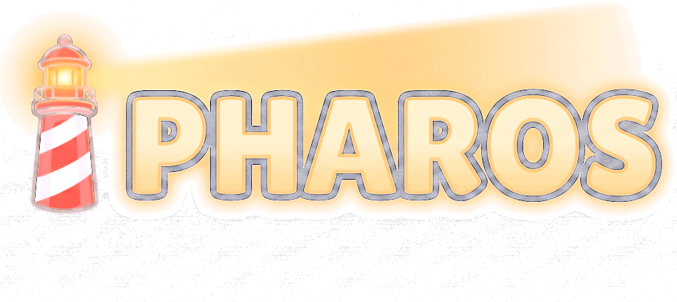

Upali svjetla Jadrana, otok po otok.
Pharos je opuštajuća logička igra. Kao čuvar svjetionika vodiš zraku svjetla do brodova i otok po otok pališ svjetla duž Jadrana.
Ime dolazi od grčkog naziva za Hvar i riječi za svjetionik.
Ideja i dizajn: Antonio Glavač
Obrisi obale i otoka: © OpenStreetMap contributors (ODbL).